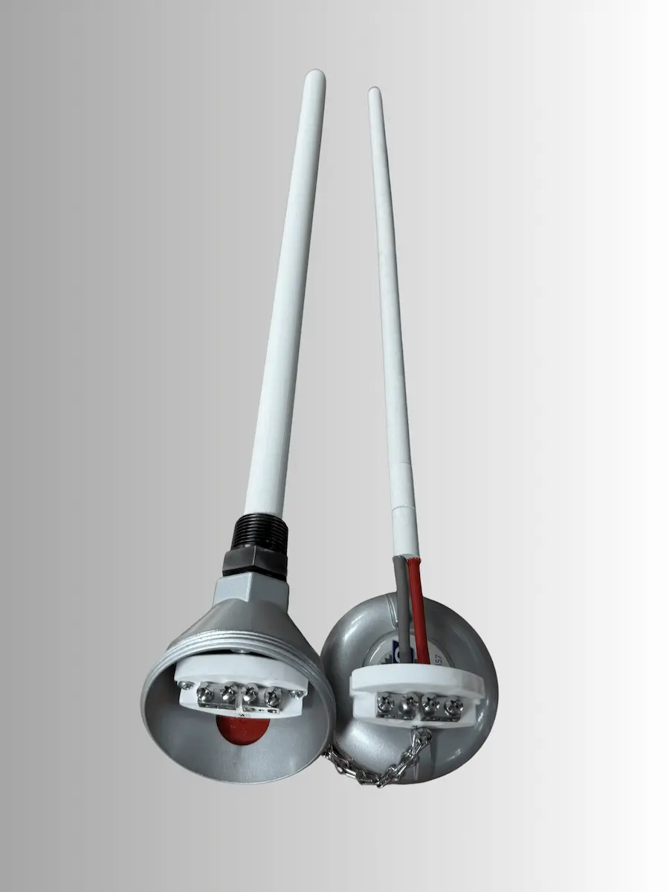
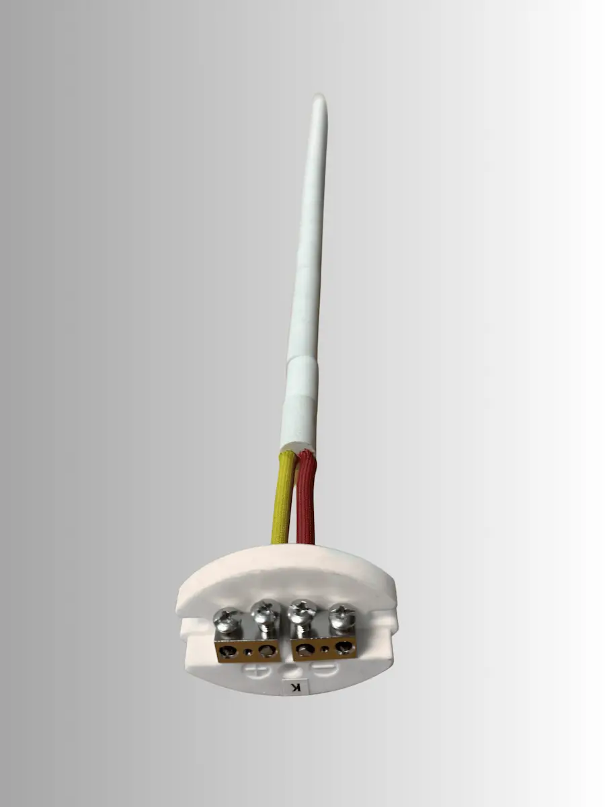

Replacement Crematory Thermocouples
Reliable, American-Made Assemblies to Keep Your Retort Running.
Backed by a century of manufacturing excellence.
Orders before 2pm EST processed same day.
Complete Thermocouple Assemblies
Type K ceramic crematory thermocouple assemblies with 3/4" NPT fittings, manufactured in the USA and built to handle the extreme heat of crematory retort operations.

Type K Ceramic Assembly with 3/4" NPT Fitting
Available in 12", 18", and 24" lengths — in stock and ready for same-day processing on orders received before 2 pm EST.
A Full Assembly Includes:
- Type K 8-gauge element
- Ceramic mullite protection tube (3/4" OD)
- Terminal block
- Aluminum connection head
Select Length:
Bulk pricing available for orders of 5 or more
Replacement Element & Block
A cost-effective alternative to a full assembly replacement. Keep your retort running with a Type K element and terminal block sized for your existing thermocouple.

Type K Replacement Element & Block
Designed to replace the internal element and block of your existing crematory thermocouple assembly. Available in lengths to match our 12", 18", and 24" complete assemblies.
Each Kit Includes:
- Type K 8-gauge element
- Terminal block
- Made in USA
Select Length:
Not sure which size? Contact us with your retort make & model.